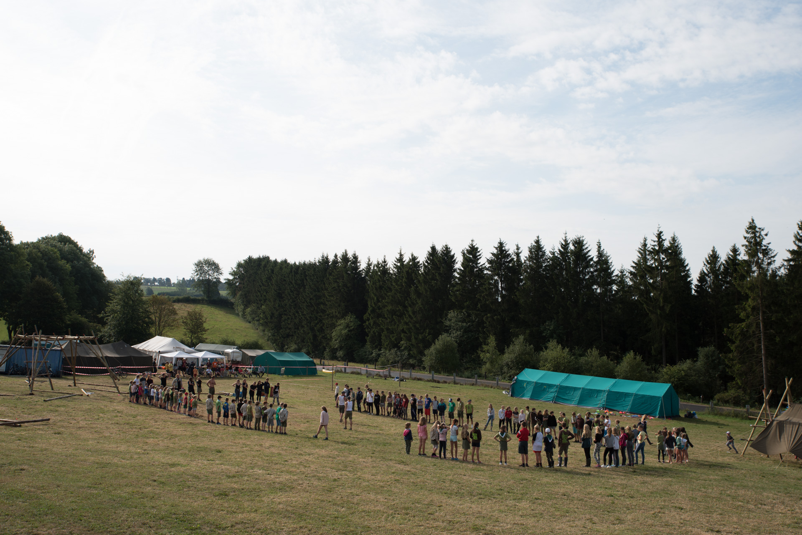

Avontuur, vriendschap & plezier in Mollem
Welkom bij Scouts Kramaai Mollem! Elke zondagnamiddag verzamelen meer dan honderd enthousiaste leden aan onze scoutslokalen voor onvergetelijke spelen, bosspelen, sjorringen en kampavonturen.

Laatste Nieuws
Nieuwsberichten laden...
Onze Takken
Bij Scouts Mollem is elk lid ingedeeld volgens leeftijd. Zo beleeft ieder kind activiteiten die perfect aansluiten bij hun leefwereld.
Het leven van een kapoen is vol spel, verwondering en fantasie. Spelenderwijs ontdekken ze het scoutingleven.
Meer over Kapoenen →Guitige tieners die zelf dingen leren doen, volop kansen krijgen om te experimenteren en samen te spelen.
Meer over Welpen →Stoere bevers die leren sjorren, knopen leggen en stapsgewijs kennis maken met verantwoordelijkheid.
Meer over Bevers →Avontuur, vlottentochten, patrouilletenten en koken op houtvuur: hier begint het echte scoutingwerk!
Meer over Jong-Givers →Ruimte voor grote projecten, een 3-daagse met de fiets op kamp, leefweken en hechte vriendschapsbanden.
Meer over Givers →Jij en Ik een Noodzaak! De overgang van lid naar leiding: eigen kamp organiseren en op buitenlandse reis.
Meer over Jins →